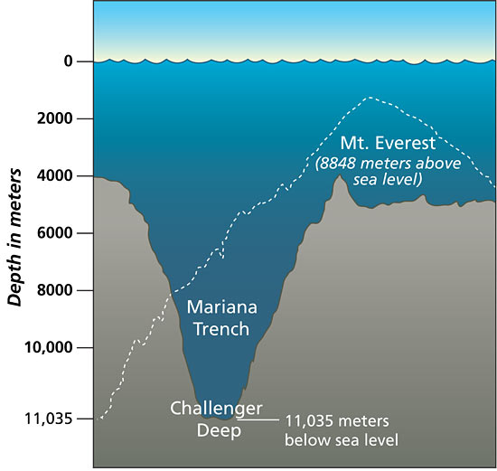
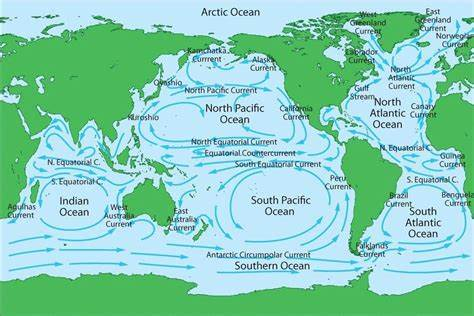
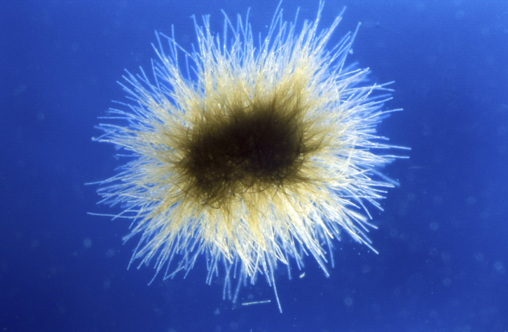
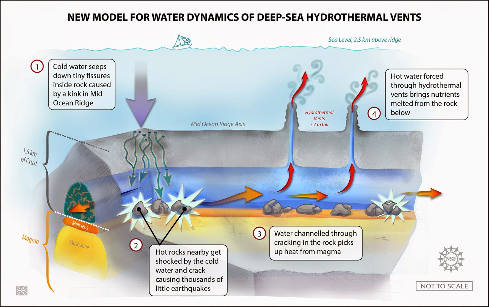
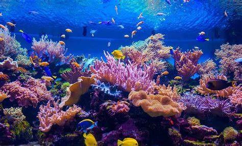

~Facts which highlight the ocean's incredible diversity, complexity, and importance to life on Earth~
Deepest Point: The deepest known part of the ocean is the Mariana Trench, with its deepest point, the Challenger Deep, reaching about 36,000 feet (10,994 meters) below sea level.

Largest Habitat: The ocean provides the largest habitat on Earth, accounting for 99% of the living space by volume.
Ocean Currents: Ocean currents act as a global conveyor belt, regulating temperature, salinity, and nutrient distribution, and significantly influencing climate patterns.

Underwater Mountains: The longest mountain range in the world, the Mid-Ocean Ridge, runs through the Atlantic Ocean and stretches for about 40,000 miles (65,000 kilometers).
Oxygen Production: Phytoplankton in the ocean produce more than half of the world's oxygen supply through photosynthesis.

Tsunamis: The ocean is capable of generating massive waves known as tsunamis, often caused by underwater earthquakes or volcanic eruptions.
Hydrothermal Vents: The ocean floor hosts hydrothermal vents, where superheated water rich in minerals supports unique ecosystems, including giant tube worms and heat-loving microbes.

Coral Reefs: Coral reefs, often referred to as the "rainforests of the sea," support an incredible diversity of life and are vital for the health of marine ecosystems.

Largest Animal: The blue whale, the largest animal on Earth, resides in the ocean, reaching lengths of up to 100 feet (30 meters) and weighing as much as 200 tons.
Bioluminescence: Many ocean creatures, including certain species of jellyfish and deep-sea fish, possess bioluminescent properties, allowing them to produce light through chemical reactions.

.jpg)
.jpg)